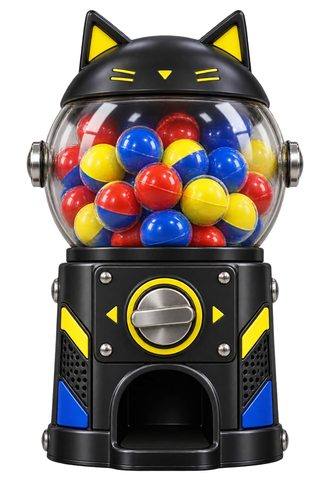

AI FILM / MUSIC / HAPPY ACCIDENTSEST. 2023
月真猫のあそびば。AI映像・MV・短編映画のポートフォリオ
TSUKIMAO
まじめに、
へんなものをつくる。
MVも、映画も、まだ名前のない表現も。
AIを道具に、想像の先をあそぶ。
そんな月真猫の、頭のなかへようこそ。
作品をえらんで見る ↓気になるものから、どうぞ。
THE RANDOM PICTURE MACHINE
No.001作品ガチャ全20作品 / ¥0

ハンドルをまわすと、作品がひとつ。
01 / THE FILM CABINET
作品、いろいろ。
気になった作品を、クリックで上映。
おまかせなら、ガチャにおまかせ。
THAT’S NOT ALL IN MY HEAD.YouTubeでもっと見る ↗
おもしろい、
のために。月真猫です。
映像、音楽、物語。
AIを道具に、まだ見たことのないものをつくるクリエイターです。
美しいものも、奇妙なものも。
ちょっと笑えるものも、あとからじわっと残るものも。作品ごとに、表現の可能性を実験しています。
このサイトも、そのひとつ。
何かひとつでも、面白がってもらえたら。
月真猫 TSUKIMAO / TSUKI.LAB
03 / MAKE IT HAPPEN
で、お仕事も。
企画から映像、編集まで。
その「こんな感じ」を、一緒に形にします。
なんか、
おもしろいこと
しませんか。
わかる範囲で、お聞かせください。
つくりたいもの・用途
おおよその尺・希望納期
ご予算・参考作品
まだ決まっていなくても大丈夫。
通常2〜3営業日以内に返信します。